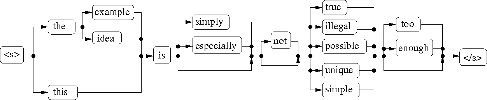

The goal of the exercise is to get familiar with continuous speech recognition using HTK and SRILM tools.
Use the submission instructions for returning your answers. Deadline is Wednesday 22.11.2023 at 23:59.
When doing these exercises from home use a Maari-B computer.
The data used in the exercise is located in the directory shown below.
Let's set a shortcut variable and the path. If your shell is
/bin/zsh or /bin/bash, write:
data=/work/courses/T/S/89/5150/general/ex4 PATH="$PATH:/work/courses/T/S/89/5150/general/bin"
If your shell is /bin/tcsh, write:
set data = /work/courses/T/S/89/5150/general/ex4 set path = ($path /work/courses/T/S/89/5150/general/bin)
HTK-models used in this exercise are under $data,
with the usual names config, macros and
hmmdefs. The models have been trained from the
famous Wall Street Journal corpus (WSJ0), which contains about 15
hours of speech from 80 speakers. The models are rather complex
context-dependent triphone models with tied mixture
states. Because of their size, they are stored in binary format,
so unlike earlier, you can not view the model files with a text
editor.
In all of the questions, you are requested to report the commands that you used to get the results.
Note that the evaluation sets used in this exercise are rather small, so that the recognition time remains reasonable. In reality, larger test sets would be preferable, so that more reliable error measurements could be obtained.
Continuous speech recognition always requires some language information to restrict the recognition. Simple dictionary based recognition is rarely enough for achieving acceptable recognition accuracy. One of the simplest forms of additional language restriction is a task grammar. It defines the allowed word sequences or sentences as word networks or finite state machines. For simple tasks this can be a very effective, but for more complex cases defining the search network this way can be troublesome.
HTK supports grammar based recognition networks
via HParse tool. Take a look at an example in HTK book
(available under /work/courses/T/S/89/5150/general/doc)
on page 25, page 184, or the reference pages 297-300, on how to define a grammar
with HTK.
The picture below defines an artificial grammar for simple
statement sentences. Define a corresponding grammar in HTK
format and convert it to a recognition network using HParse.

In the grammar definition you need to escape the sentence start
symbol as \<s\> and the sentence end symbol as
\<\/s\>. The tool is also case sensitive. Once converted, you can test that the grammar gives
only allowable sentences by looking at the output
of HSGen:
HSGen grammar_net.htk $data/grammar.vocab
where grammar_net.htk is the network compiled with HParse.
Using the recognition network and the above mentioned models,
recognize a small test set $data/grammar.scp.
Use HVite for decoding, such as:
HVite -T 1 -i grammar.rec -H $data/macros -H $data/hmmdefs \ -C $data/config -w grammar_net.htk -s 10.0 -t 200.0 \ -S $data/grammar.scp $data/grammar.dict $data/tiedlist
Include in the report the grammar definition you constructed, the
commands you used, and the individual recognition results as
reported by HResults:
HResults -h -t -I $data/grammar.mlf /dev/null grammar.rec
Why did the recognizer make mistakes?
Let's try the same recognition task with an n-gram language model.
File $data/grammar.sent includes training sentences
generated from the grammar. These were generated using HTK
tool HSGen. Using SRI tool ngram-count
as instructed in Exercise 3, train two 2-gram models, with and
without smoothing (for the smoothed model, use options
-interpolate -cdiscount1 0 -cdiscount2 0.5).
You need to modify the unsmoothed language model in a text editor (it is text-based ARPA format), because ngram-count compensates round-off errors with non-infinite back-off weights: Under \1-grams: section, replace all back-off weights (the third column) with -99, which represents minus infinite. This makes sure the language model can not generate unseen word sequences.
Build a recognition network out of the language models with
HBuild. For example,
HBuild -s "<s>" "</s>" -n grammar_2gram.lm $data/grammar.vocab grammar_2gram_net.htk
creates a recognition network from 2-gram model
grammar_2gram.lm. Run the recognition and see the results
with HResults as in part a). Include the commands and
the output of HResults to the report.
How did the recognition results change with these language models?
Explain why.
Now that we are evaluating continuous speech recognition, we can
take a closer look at the error measures reported
by HResults. The tool divides the errors to three
categories: substitutions, deletions, and insertions. These refer
to the word level editing operations needed to match the
transcription to the recognition hypothesis. Usually only the
summed Word Error Rate (WER) is used for evaluation (shown under
Err column), but this division can give a hint what kind of
mistakes the recognizer is doing.
Let's review the HVite recognition command in the
previous question. Below are explanations of each of the parameters:
| -T 1 | Print some progress info during recognition |
| -i grammar.rec | The file to store the recognition output to |
| -H $data/macros -H $data/hmmdefs | The HMM models |
| -C $data/config | The general configuration file |
| -w grammar_net.htk | The recognition network |
| -s 10.0 | Language model weight |
| -t 200.0 | Beam pruning threshold |
| -S grammar.scp | A list of files to be recognized |
| $data/grammar.dict | The pronunciation dictionary |
| $data/tiedlist | List of triphone models |
Two important parameters worth discussing are the language model weight
-s and the beam pruning
threshold -t. The first one defines the multiplier
for the logarithimic likelihoods of the language model, applied
before summing them to the loglikelihoods of the acoustic model to
form the total score for each hypothesis. In
case of a grammar it does not have any effect as grammars
(usually) only define allowed sentences, not their
probabilities. That is, all the allowed sentences are considered
equally possible. N-gram models, on the other hand, operate with
probabilities. Remember that smoothed N-gram models make all the
word sequences of a given dictionary possible, although some might
be highly unlikely. To define the influence of the language model
and to adjust the "separation" between common and rare sentences,
language model weight is used. The larger the value, the more the
recognition favors common sentences defined by the language
model. With a small weight, language model has smaller effect and the
recognizer makes the decisions more according to the acoustic
models.
Recognizing, or decoding, continuous speech is computationally hard, and several tricks are used to make it fast enough. A very common parameter in speech recognizers is the beam pruning threshold, which defines the maximum logarithmic likelihood difference between the best and alternative hypotheses at any given time. In theory different hypotheses can be fairly compared only after the acoustic and language model likelihoods have been computed for the whole utterance. In practice this is not computationally feasible, so the lower probability hypotheses are pruned away already earlier in the decoding process. Reducing the beam pruning threshold makes the recognition faster, but can lower the accuracy if the recognizer abandons lower probability hypotheses too aggressively. With a properly tuned beam threshold, this pruning does not have significant effect to the accuracy. The threshold, however, is heavily dependent on the task, the language model, and the language model weight used.
The HVite tool used in the previous question is a rather
simple one. Its main limitation is that it can not be used with larger
language models, only n-gram models up to 2-grams can be converted
into recognition networks with HBuild. A more refined
tool for large vocabulary continuous speech recognition is HTK's
HDecode. It is restricted to triphone acoustic
models, but it can natively use n-grams up to 3-grams. It is also
faster then HVite. Using HDecode is
similar to HVite, except that instead of a
recognition network, a language model is provided directly.
Some configurations also differ, hence an extra configuration
file is used in this exercise.
File $data/wsj_5k_eval.scp contains the evaluation
set used in the rest of the exercise. Suitable language models are
provided in files $data/wsj_5k.?gram.lm.gz. Corresponding
dictionary file for HDecode
is $data/wsj_5k.hdecode.dict. Transcript file for
the evaluation set is in $data/wsj_5k_eval.mlf.
Using these files, recognizing the evaluation set with
HDecode and the 3-gram model is done as follows:
HDecode -T 1 -C $data/config -C $data/config.hdecode -S $data/wsj_5k_eval.scp \ -i results.mlf -H $data/macros -H $data/hmmdefs -t 150.0 -s 10.0 \ -w $data/wsj_5k.3gram.lm $data/wsj_5k.hdecode.dict $data/tiedlist
Using the 3-gram language model, recognize the WSJ evaluation set
with language model weights 12.0, 14.0, 16.0 and 18.0. Use beam
pruning threshold 200.0. Report the commands you used and the
word error rate for each of the language model weight (you can
omit -t switch in HResults to have less
output). Which language model weight gave the best recognition
results?
Run the recognition again with language model weights 12.0 and 18.0, but now with beam pruning threshold 220.0. Compare the WERs to the results of the a) part. Why does the larger language model weight require a larger beam threshold as well?
Sometimes even higher order n-grams than 3-grams are needed. HTK
does not support them as such, but we can still get past the
3-gram limit. Both HVite and HDecode
support writing recognition lattices instead of just the best
hypothesis. These lattices are compact representations of the
hypotheses considered during the recognition. The hypotheses in a
lattice can be rescored with a higher-order language model,
after which we can choose the resulting new best hypothesis as the
recognition result. Another benefit is that this rescoring
operation is much faster compared to full decoding. It is also possible
to use lattices as a basis for acoustic rescoring with a different
acoustic model.
To experiment with the lattice rescoring, let's use
HDecode to create lattice representations of the
evaluation set. Usually a 2-gram model is enough for lattice
generation. Run the following:
mkdir lattices HDecode -T 1 -C $data/config -C $data/config.hdecode -S $data/wsj_5k_eval.scp \ -H $data/macros -H $data/hmmdefs -z htk -l lattices -t 175.0 -s 10.0 \ -w $data/wsj_5k.2gram.lm $data/wsj_5k.hdecode.dict $data/tiedlist
Directory lattices now contains a separate lattice file
for each of the utterance in the evaluation set. The lattices
may be rather big, but it is important that they contain enough alternative
hypotheses so that rescoring is able to improve the result. Beam pruning
and language model weight affect the lattice generation similarly to
regular decoding.
Lattices can be manipulated with SRILM tool lattice-tool.
For example, rescoring the generated lattices with a 4-gram model
is achieved with the following:
ls lattices/*.htk.gz > original_lattices.list lattice-tool -order 4 -in-lattice-list original_lattices.list \ -read-htk -lm $data/wsj_5k.4gram.lm.gz -write-htk -out-lattice-dir rescored
The rescored lattices are placed in the rescored/
directory. Next we can use lattice-tool to find the best hypotheses
after rescoring and compute the word error rate.
ls rescored/*.htk.gz > rescored_lattices.list lattice-tool -htk-lmscale 10 -in-lattice-list rescored_lattices.list \ -read-htk -viterbi-decode | $data/viterbi2mlf.pl > rescored/rec.mlf HResults -h -I $data/wsj_5k_eval.mlf /dev/null rescored/rec.mlf
Option -htk-lmscale defines the language model weight.
Do the following two tasks without running HDecode
again. Report the commands used and the WER results from
HResults.
Extract the recognition results from the original lattices (BEFORE rescoring) and evaluate their WER. Use language model weight 18.
Fetch the best paths from the 4-gram rescored lattices using language model weights 10.0, 14.0, 18.0, 22.0, 26.0 and 30.0. Report the WER results. Which weight now gave the best result?
Consider different speech recognition applications. When would you use an n-gram model trained from a large text corpus? When would you use other kinds of language models?